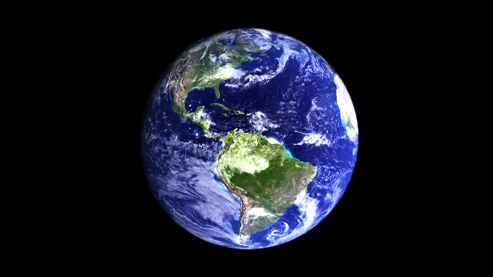
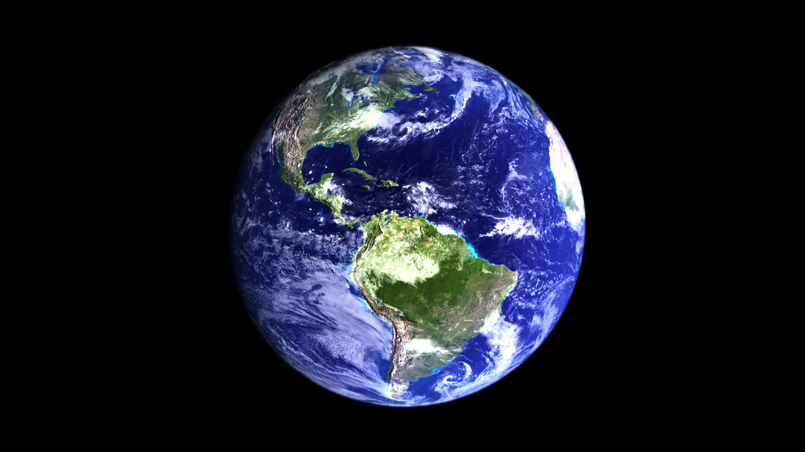
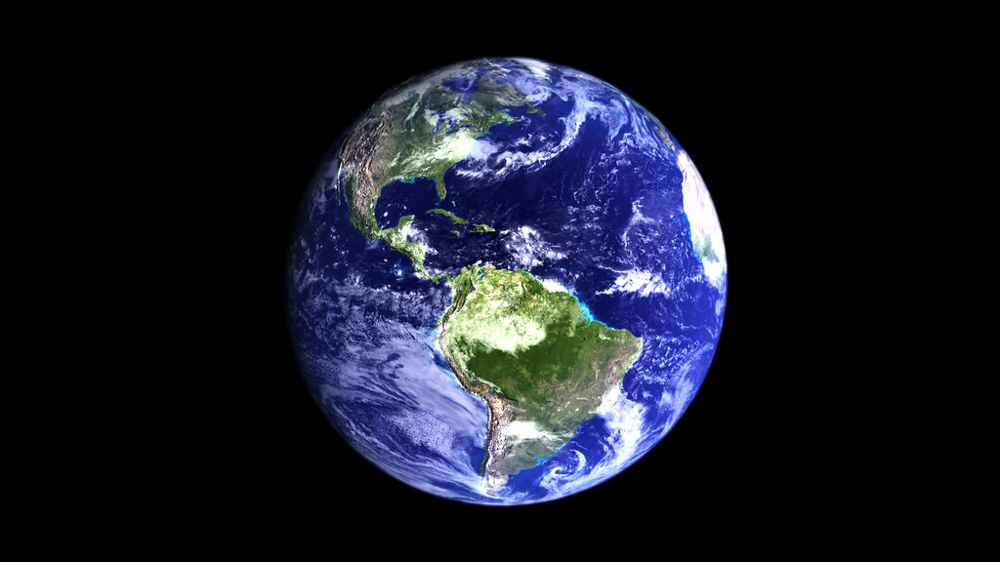

| Info | Mars | Jupiter | Earth | Neptune |
|---|---|---|---|---|
| Mass(kg) | 6.42 x 10 23 | 1.90 x 10 27 | 5.98 x 10 24 | 1.02 x 10 26 |
| Diameter(km) | 6,787 | 142,800 | 12,576 | 49,528 |
| Mean Density(kg/m3) | 3,940 | 1,314 | 5,520 | 1,640 |
| Escape Velocity (m/s) | 5,000 | 59,500 | 11,200 | 23,300 |
| Rotation Period (length of day in Earth days) | 1.026 | 0.41 (9.8 Earth hours) | 1 (23.93 hours) | 0.67 (19.1 hours) |
| Revolution Period (length of day in Earth days) | 686.98 | 11.86 | 365.26 | 60,190 (164.8 Earth years) |
Website created by: Jocelyne Herrera